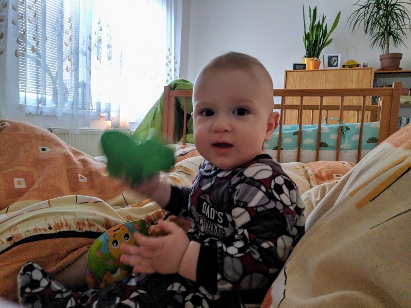
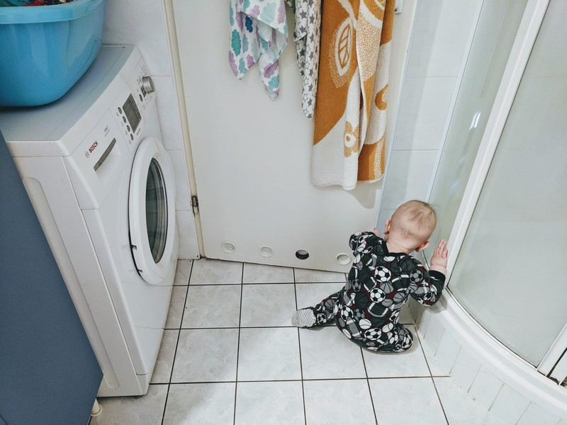
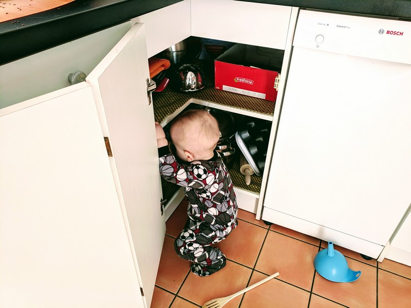
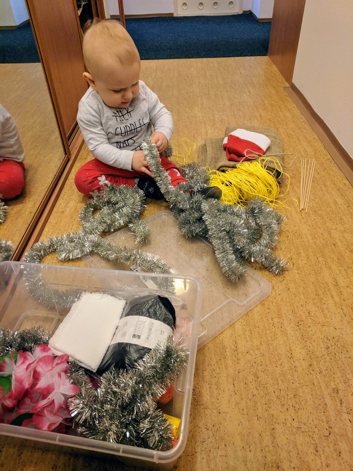
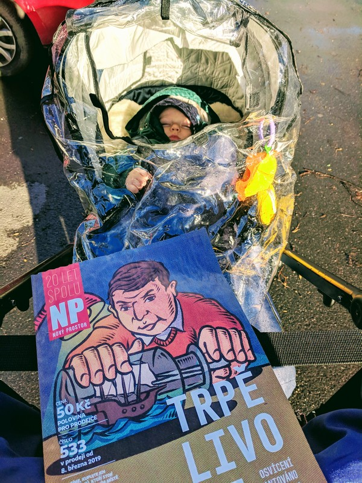
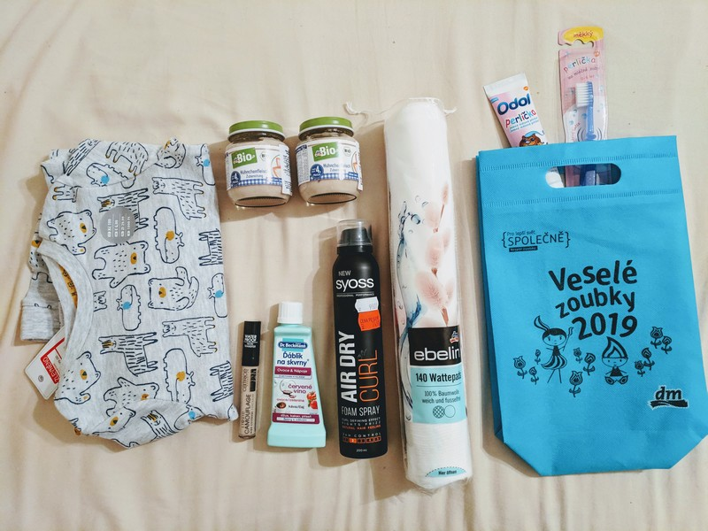
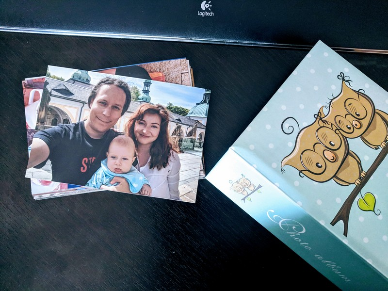

Tento formát mě už kdysi dávno zaujal na několika sledovaných blozích. A tak jsem se jedno pondělí, jen tak pro zpestření jinak všedního dne, rozhodla zaznamenat také naše běžné aktivity - “minutu po minutě”… Pro někoho to možná bude nudné čtení, ale pokud vás zajímá, jak vypadá takový obyčejný den na mateřské, čtěte směle dál…
5:55 Olík se budí. Péťa k němu vstává a přebaluje ho, zatímco já se loučím s vidinou delšího spánku. Náš den začíná. Jako každé ráno si beru Olího k sobě, kojím ho a pomalu se probouzím.
6:20 Ve snaze oddálit nevyhnutelné - totiž opuštění vyhřáté postele - jako obvykle nanosím Olímu do postele různé hračky.

6:45 Olí už je v posteli k neudržení. Vstávám s ním a nechám ho chvilku hrabošit po ložnici. Otvírá Péťovu prádelní skříň a rabuje ponožky, natahuje se po zácloně nebo vytahuje z proutěného koše časopisy. Že přitom nadělá spoustu bince asi nemusím zmiňovat, že.
7:00 Jdu si do koupelny vyčistit zuby. Olí jde poslušně se mnou a mezitím si hraje s pračkou. Je dneska nějaký nešikovný, takže dvakrát za sebou upadne a já ho musím utěšovat. Z pyžama se stihnu převlíct jen tak napůl, Olího hlad je silnější :D

7:15 Jdeme společně do kuchyně, chystám čaj a snídani. Olí mezitím kramaří v přebalovací tašce, což ho poslední dobou velmi baví, hraje si s magnetkama na lednici a následně jde rabovat do kuchyňských šuplíků, což také patří k našemu každodennímu koloritu :D
7:25 Snídaně je hotová. Olí dostane rozmašírovaný banán, já chleba s chorizem. Dala bych si k němu i nějakou zeleninu a celkově ráda vymýšlím kreativnější snídaně, když O. dovolí - to dnes ale bohužel není ten případ, takže rychle ke stolu.
7:45 Jsme po jídle a jdeme si hrát. Oblíbenou zábavou je teď aktuálně stavění komínů z kostek a hlavně honění se kolem našeho konferenčního stolku :D
8:15 Jdu si uvařit další čaj. Olí hned běží za mnou. Péťa právě vstává.
8:30 Kojím Olího. Uvědomuju si, že pro něj na dnešek nemám žádný oběd, tak honem vytahuju hotovou porci z mrazáku. Olí rejdí po bytě.

9:10 Péťa odchází do práce. O. svačí přesnídávku od Hippu (kterou jsem důvěrně překřtila na “hipíka” :D). Pak je čas na přebalování. Po akci dávám Olího na chvíli do postýlky, odkud mě rád pozoruje, jak stelu postele. Chvíli si ještě hrajeme, ale O. už je evidentně unavený, tak s ním jdu do postele, nakojím ho a během chvilky je tuhej.
10:15 Olí spinká. Já jdu žehlit a nahodit trochu make-upu, protože po obědě půjdeme ven.
10:50 O. se budí. Ještě ho zkouším na chvilku uspat a jdu dožehlit zbývající prádlo a ohřát si cibulačku, co mi zbyla z víkendu. Stihnu se najíst a dokonce i vytáhnout čisté nádobí z myčky a naládovat do ní zase to špinavé. Olí spí dneska nezvykle dlouho, takže to teď bude vypadat, že mám doma těžkou pohodu, ale věřte, že to tak rozhodně není každý den :-D
12:30 Po 2,5 hodině Olí konečně vstává a jdeme se spolu naobědvat. Moje menu tvoří zbytky z víkendu a Olí má rozmraženou domácí zeleninku.
13:05 Jsme po obědě, venku prší :(

14:15 Zdá se, že za oknem se konečně vyjasnilo, takže hned vyrážíme ven. Namířím si to k výstavišti, našemu oblíbenému vycházkovému cíli, ale než tam dorazíme, začne zase poprchávat. Napadne mě naskočit na trolej do Bohunic a projít se pěšky zpátky domů po cyklostezce - určitě nebude pršet dlouho. Od nápadu k činu je jen krok a za chvíli jsme v kampusu. Protože je pořád škaredě, jdu nakoupit do DMka nějaké drobnosti. V prodejně potkáme “zoubkovou vílu”, která mi dá pro Olího aktuálních 6 zubů kartáček a pastu. Tiše pomlčím, že zuby jsme zatím ještě vůbec čistit nezačali a zubaře pro něj ještě nemám ani vybraného, a zapluju mezi regály :D Venku se mezitím spustí brutální vichřice a vzduchem poletuje něco mezi kroupama a sněhem. Raduju se, že jsem pod střechou, a jdu ještě prohrabošit oddělení oblečení do Tesca. Samozřejmě nakupuju pro Olího, ne pro sebe :D. Vyberu mu ve slevách prima komplet bodýčka a tepláčků, a protože mezitím venku vysvitne slunce, honem zaplatím a frčíme ven. Procházíme se kolem nových budov, které v kampusu v poslední době vyrostly, ale nakonec usoudím, že je čas zamířit na cyklostezku. Než se k ni ovšem dostanu, aprílové počasí se přižene zpět a s ním i vánice s dešťo-sněho-kroupama.
15:30 Jak už to tak bývá, dítě v tom nejhorším počasí poklidně usíná. Typické! Zpruzená a celá mokrá vlezu pod nejbližší krytou zastávku a čekám na trolej. Plán s příjemnou procházkou přírodou padá.
16:00 Stojíme zase před domem, Olí spí, slunce svítí, a tak vytahuju z kočárku Nový prostor a jdu si číst, zatímco pomalu kroužím kolem bloku.

16:45 Zima mě vyžene domů. Olí se tváří, že by ještě spal, ale na chodbě potkáváme sousedku a hlasy ho vzbudí. Nevadí, stejně už je čas na svačinu.
17:30 Po jídle si voláme s dědou přes WhatsUp.
18:00 Péťa se vrací z práce. Dostávám világoš za to, že Olí dopoledne urval ventil na topení 8-) Pouklízím všechny rozkrámované věci, které Olí porůznu roztrousil po bytě a kochám se dnešním úspěšným nákupem :D

19:00 Koupeme společně Olího. Poté následuje kaše na dobrou noc a čtení pohádky, které se pokoušíme včlenit mezi jeho pravidelné uspávací rutiny, leč zatím neúspěšně. O. už je unavený a řve, takže rezignuju a jdu ho nakojit.
20:00 Olí spí, jdu se navečeřet.
20:30 Jediný čas dne, který na sebe s Péťou máme. Dneska ho trávíme zařazováním nové várky našich společných fotek, které každoročně Péťa vyvolává k našemu výročí, do alba. Prohlížíme si je, vzpomínáme…

20:50 Jdu spáchat večerní hygienu a pak se sklátím do postele :D